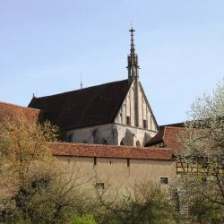

Michael Stifel was born in 1487, a German monk who was awarded an M. A. degree after a single year of study (such was common at this time). Stifel entered the Augustinian monastery in Esslingen and was ordained in 1511. However, Stifel disagreed with how the Catholic church took money from the poor to absolve their sins. At this time in 1517 Martin Luther posted his 95 theses condemning such indulgences, which Stifel supported. Stifel began using numerical codes to uncover hidden meanings within names of religious leaders linking them to the Antichrist, for example. He also composed a song in honor of Martin Luther. Followed by the reaction of the Roman Church, Stifel fled from the Esslingen monastery in 1522.
 Michael Stifel
Michael Stifel
